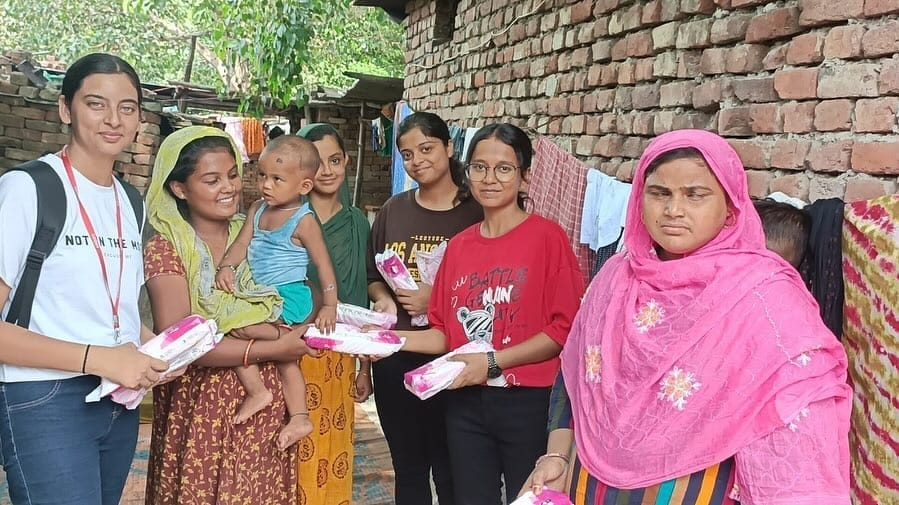

Our Initiative
She Can Foundation works to improve the health and well-being of women and young girls through awareness programs, menstrual hygiene education, and community health initiatives. Our goal is to ensure that every woman has access to basic healthcare knowledge and resources needed for a healthy life.
What We Do
- Distribution of sanitary pads to underprivileged women and girls
- Menstrual hygiene awareness and education sessions
- Community health awareness campaigns
- Nutrition and wellness workshops
- Support for women’s health and dignity initiatives
- Collaboration with volunteers to reach underserved communities
Our Impact
Through regular awareness drives and health support activities, we help women make informed health decisions, break social stigmas, and improve their overall quality of life. Every initiative contributes to building healthier and stronger communities.